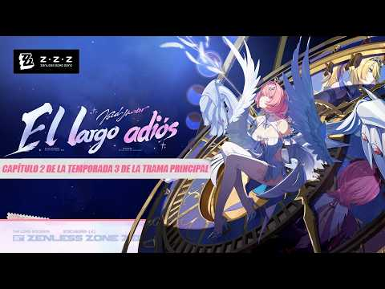
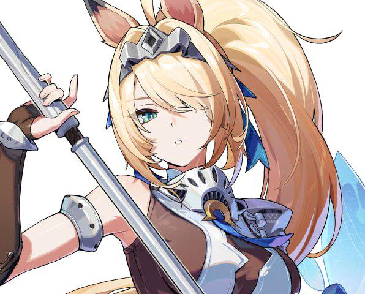

Random Play y los Proxies
Random Play es el videoclub de Belle y Wise en Nueva Eridu.
Además, los hermanos trabajan como Proxies y ayudan a explorar las Cavidades.
En la versión 3.1 comienza el capítulo 2 de la temporada 3: "El largo adiós".
También llegan los nuevos agentes Remielle y Sigrid.


